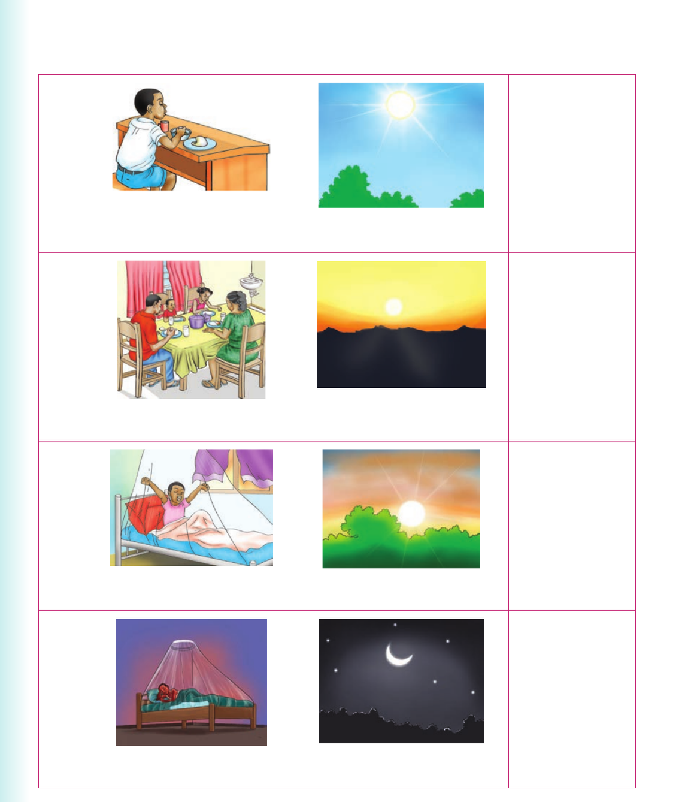

I talk or sign about daily activities
I talk or sign about daily activities.
Activity 1

Talk or sign about time and activities based on the following pictures. (a) Lunch, afternoon. I take lunch in the afternoon. (b) Dinner, evening. (c) Wake up, morning. (d) Sleep, night.